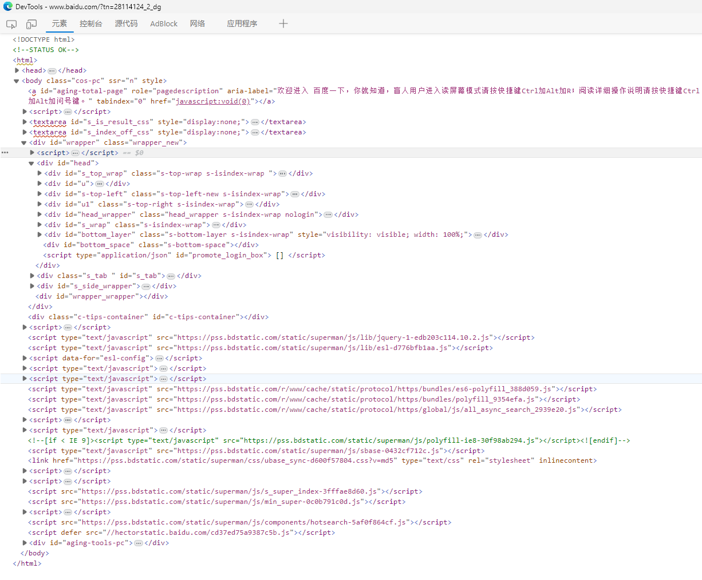

抽象界面 #
在编程领域中，GUI 界面如何描述一直是桌面程序开发中的一个难题。 在 BDL 中，我们使用 XML 来描述界面，BDL 操作界面作为补充。
XML是一种标记语言，它并不是编程语言。
你如果了解HTML，那么你就可以轻松理解XML。XML是一种要求严格的HTML，但他们实际并不存在包含不包含关系。
在
百度首页，按下F12，你能看到如下界面，这就是HTML语言。XML也遵循着类似的结构风格。

XML 语法 #
XML 语法仅需要了解即可，并不会要求能够写出一个标准的 XML。只需要了解即可。
XML的语法非常简单，它由标签组成，标签分为开始标签和结束标签。
名词介绍 #
<?xml version="1.0" encoding="UTF-8"?>
<note name="n1" >
<to>Tove</to>
<from>Jani</from>
<heading>Reminder</heading>
<body>Don't forget me this weekend!</body>
</note>
以上 XML 代码中，
-
<?xml version="1.0" encoding="UTF-8"?>是 XML 的申明 -
任何一个
<...>到它的<.../>被称作元素，元素也被称为节点，是同一个意思- 以下是一个元素
<note name="n1" > <to>Tove</to> <from>Jani</from> <heading>Reminder</heading> <body>Don't forget me this weekend!</body> </note>- 以下也是一个元素
<to>Tove</to> -
元素中可以包含元素
-
<to>Tove</to>中Tove是元素to的值 -
<note name="n1" >中name="n1"被称作属性，name是属性名，n1是属性值
XML 文档必须有根元素 #
XML 必须包含根元素，它是所有其他元素的父元素，比如以下实例中 root 就是根元素：
<root>
<child>
<subchild>.....</subchild>
</child>
</root>
以下实例中 note 是根元素：
<?xml version="1.0" encoding="UTF-8"?>
<note>
<to>Tove</to>
<from>Jani</from>
<heading>Reminder</heading>
<body>Don't forget me this weekend!</body>
</note>
XML 声明 #
XML 声明文件的可选部分，如果存在需要放在文档的第一行，如下所示：
<?xml version="1.0" encoding="utf-8"?>
所有的 XML 元素都必须有一个关闭标签 #
在 XML 中，每一个<...>必须对应一个<.../>
<item>...</item>
XML 必须正确嵌套 #
以下是正确语法：
<b>
<i>This text is bold and italic</i>
</b>
以下语法是错误的：
<b>
<i>This text is bold and italic</b>
</i>
XML 属性值必须加引号 #
在 XML 中，XML 的属性值必须加引号。
请研究下面的两个 XML 文档。 第一个是错误的，第二个是正确的：
<note date=12/11/2007>
<to>Tove</to>
<from>Jani</from>
</note>
<note date="12/11/2007">
<to>Tove</to>
<from>Jani</from>
</note>
实体引用 #
在 XML 中，一些字符拥有特殊的意义。
如果您把字符 “<” 放在 XML 元素中，会发生错误，这是因为解析器会把它当作新元素的开始。
这样会产生 XML 错误：
<message>if salary < 1000 then</message>
为了避免这个错误，请用实体引用来代替 “<” 字符：
<message>if salary < 1000 then</message>
| 原符号 | 需替换为 | 说明 |
|---|---|---|
< |
< | 小于号 |
> |
> | 大于号 |
& |
& | and符 |
' |
' | 单引号 |
" |
" | 双引号 |
XML 中的注释 #
<!-- This is a comment -->
验证XML是否合法 #
你可以在 xmlvalidation验证你的xml是否正确。
BDL界面XML语法 #
XML语法很简单，但BDL中不是随便写一个XML语法就可以产生页面，页面上不同的输入框、按钮、表格等都需要特定的元素名称才可以实现，BDL才能正确识别。
我们先来看一下已有的文件的XML文件，在BDL中，我们调用的GUI文件是42f文件，p_zz主画面在azz/42f/p_zz.42f，让我们打开这个文件。
我们截取其中一部分文件：
<Page name="page01" text="Main">
<Grid name="gr3040" width="72" height="2">
<Label text="Program ID" posY="0" posX="1" gridWidth="10"/>
<FormField name="zz_file.zz01" colName="zz01" sqlType="VARCHAR(20)" required="1" notNull="1" fieldId="0" sqlTabName="zz_file" tabIndex="1">
<ButtonEdit width="18" action="controlp" image="zoom" shift="down" scroll="1" comment="KEY Field,No Blank/Repeated!" posY="0" posX="22" gridWidth="20"/>
</FormField>
<Label text="Module ID" posY="0" posX="48" gridWidth="9"/>
<FormField name="zz_file.zz011" colName="zz011" sqlType="VARCHAR(10)" fieldId="1" sqlTabName="zz_file" tabIndex="2" notNull="1" required="1">
<ComboBox width="7" queryEditable="1" comment="Which Module is the Program in. Fill it!" posY="0" posX="62" gridWidth="9"/>
</FormField>
<Label text="Program Name" posY="1" posX="1" gridWidth="12"/>
<FormField name="gaz_file.gaz03" colName="gaz03" sqlType="VARCHAR(500)" fieldId="2" sqlTabName="gaz_file" tabIndex="3" noEntry="1">
<Edit width="38" comment="Show Program Description" posY="1" posX="22" gridWidth="38"/>
</FormField>
<Button name="modify_program_name" width="5" text="Update" posY="1" posX="62" gridWidth="5" tabIndex="503"/>
</Grid>
</Page>
<ComboBox width="18" queryEditable="1" posY="2" posX="27" gridWidth="20">
<Item name="sm1" text="sm1"/>
<Item name="sm2" text="sm2"/>
<Item name="sm3" text="sm3"/>
<Item name="popup" text="popup"/>
<Item name="main" text="main"/>
<Item name="dialog" text="dialog"/>
<Item name="naked" text="naked"/>
<Item name="viewer" text="viewer"/>
<Item name="report" text="report"/>
<Item name="err01" text="err01"/>
<Item name="login" text="login"/>
<Item name="view" text="view"/>
<Item name="lib" text="lib"/>
</ComboBox>
可以看到上，元素的名称，属性都不是随便命名的：
- 元素名称
FormField、Label定义了这个元素显示的时候的基本类型，如标签、输入框等。 - 元素的属性名
name、width、posY、posY分别指定了这个元素在页面上的显示位置，以及显示的类型。 - 复杂的元素如下拉框
ComboBox，除了本身之外，还有子元素Item
那么这么多的不同的名称都需要记住才能写好BDL的GUI界面吗，当然不需要！
安装GDC套件时，可选的genero studio既可以编写程序代码，也可以用鼠标拖拽的方式来生成BDL的GUI界面。
所以你只要知道每种元素的名称，就可以用鼠标来生成界面，然后直接产生画面档文件即可。